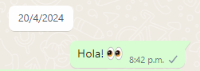
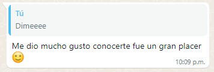
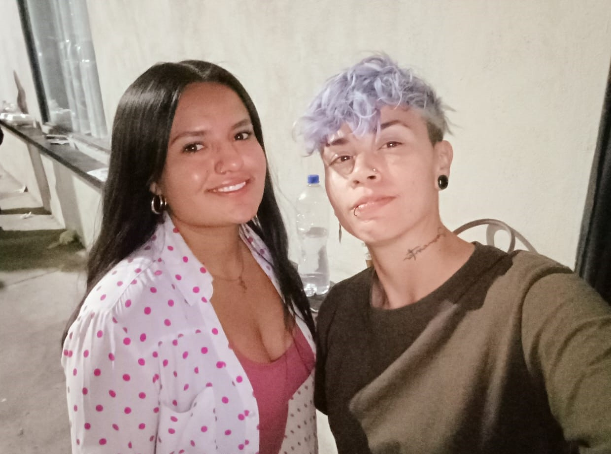

Eres
20 DE ABRIL
-
El buen 20 de abril amaneció como cualquier otro día. Me levanté con la rutina habitual y me preparé para ir a trabajar. Aquel día, como todos los demás, mi turno comenzaba a las 2:30 de la tarde. Al llegar, fui directo a por mi acreditación, y después de que mi huella fuera verificada, me dejaron pasar a la plaza de toros.
Apresurada por el tiempo, caminaba a paso rápido, intentando no llegar tarde. De repente, en la puerta número 8, mi mirada se detuvo y mi corazón pareció congelarse en el tiempo. Allí estaba ella, una chica tan linda, tan hermosa, que me cautivó desde el primer segundo en que la vi. Sus ojos, su sonrisa, todo en ella irradiaba una belleza que me dejó sin aliento.
En ese instante, sentí que una flecha de Cupido había atravesado mi corazón. Unas ganas irresistibles de hablarle, de conocerla, se apoderaron de mí. Era una necesidad tan grande, algo que jamás había experimentado en mi vida. Sentí un miedo irracional a perder la oportunidad de acercarme a ella, de descubrir quién era, de compartir aunque fuera unas palabras.
No la conocía, ni siquiera sabía su nombre, pero desde ese preciso momento, supe que ya la quería con todo mi corazón. Era una conexión inexplicable, una atracción que iba más allá de lo físico. Algo en su presencia me decía que debía hablarle, que debía intentar conocerla, porque no hacerlo significaba perder algo que podría ser maravilloso.
Mis pasos se volvieron vacilantes. La timidez y el miedo se mezclaban con la determinación y el deseo. ¿Qué le diría? ¿Cómo reaccionaría ella? Pero más allá de todas esas dudas, lo único que importaba era que no podía dejar que ese momento se desvaneciera. La oportunidad estaba allí, esperándome, y debía encontrar el valor para aprovecharla.
Con el corazón latiendo con fuerza y la mente llena de posibilidades, la cobardía se apoderó de mí. Mi cuerpo temblaba solo de pensar en cruzar palabra con ella. En ese momento, mi única solución fue pedir ayuda. Mi amigo estaba ahí, así que le conté lo que me sucedía y le pedí que hiciera el favor de pedirle su número. Sabía que podría ser un fracaso, pues no creía que ella se lo diera a él.
Me mandaron a mi puesto y me fui con la incertidumbre de lo que pasaría, si ella daría el número o no, pensando si mejor debí haber ido yo personalmente, pensando durante todo el turno mil y una cosas. Pasaron las horas y mi trabajo en la plaza terminó. Busqué a mi amigo para que me contara si se había logrado obtener el número. Me dijo que no la había encontrado. Mi corazón se sintió triste en ese momento, preocupada y abatida por no haber logrado nada por mi cobardía.
Al verme así, mi amigo me dijo que fuéramos a buscarla, en toda la plaza, en algún lugar debía de estar. Motivada por él y por la idea de poder verla, fuimos a buscarla, y no pasó mucho para encontrarla, en la puerta 4 de sol, ahí estaba la mujer más bella del universo. Cuando la vi, mi corazón casi se detiene. Entonces corrí lo más fuerte que pude por los nervios y mi amigo ya sabía lo que tenía que hacer: ir a preguntarle el número de teléfono para mí.
Esperé a ver qué decía ella. Algo dentro de mí pensaba que no se lo daría, pero cuando él regresó, vino con buenas noticias. Ella le había dado el número y por primera vez escuché su nombre, tan lindo como ella: Paloma. Además, me dijo que ella no era de Aguascalientes, sino de León. Eso me sorprendió, pero sabía que existía la posibilidad desde antes. Podría ser de Aguascalientes, Zacatecas, León o Guadalajara.
Me fui contenta por el número, aunque triste por ser cobarde y no hablar con ella. Ahora solo quedaba algo por hacer: escribirle. Entonces completamente dispuesta a descubrir lo que el destino había puesto en mi camino aquel buen 20 de abril, mande el primer Hola.

25 de Abril
Ella escribió que estaría en la puerta 3. Con un mar de emociones en el pecho, fui a buscarla, armándome de valor. Cuando la vi, supe que había hecho lo correcto. Mi corazón se llenó de alegría solo de verla, la saludé con la mano y ella devolvió el saludo.
Todo era perfecto hasta que los compañeros cortadores empezaron a bromear sobre la comida, ya que le había llevado algunas cosas para que comiera mientras estaba allí. "¿Y a nosotros qué nos trajo?", preguntaron. Les dije que ella les iba a compartir. Después de bromear un poco, me despedí para ir a mi puesto antes de que me llamaran la atención.
La felicidad no me cabía en el pecho. No fueron más de 10 minutos, pero para mí, eso era suficiente para desbordar alegría. Trabajé mi turno como de costumbre, pero ahora había algo diferente: la sensación de estar cumpliendo un sueño, de volver a sentir emoción por alguien.
Cuando por fin se terminó el turno, volví a visitarla a su puerta. Estuvimos conversando, conociéndonos un poco más, y no podía dejar de admirarla: su forma de pensar, de actuar, de tratarme. Poco a poco, me fui enamorando más y más.
Para cerrar con broche de oro, ella envió un mensaje diciendo que le había dado mucho gusto conocerme. Me sentí la persona más afortunada del mundo.

26 de Abril
Su presencia irradiaba una gracia natural: sus ojos, profundos y brillantes, reflejaban una mezcla de dulzura y misterio; su cabello corto ondulado que enmarcaban su rostro perfectamente simétrico; y su sonrisa, tan cálida y genuina, era capaz de iluminar hasta el rincón más oscuro del lugar. Cada vez que la veía, parecía más hermosa que la vez anterior.
Volvimos a conversar y, en un momento de espontaneidad, tomé un video de ella mientras se alejaba a cumplir una de sus funciones del trabajo.
Además, ella pidió que nos tomáramos una foto. Acepté con una mezcla de nervios y emoción. Mientras nos acercábamos para la foto, sentí su cercanía, su perfume, y el calor de su presencia, algo que me hizo sentir en las nubes. La acompañé hasta donde se subió a su combi. Nos despedimos con una sonrisa y una promesa de volver a vernos.

Ese día, al igual que los anteriores, derrochaba felicidad, pero esta vez, la intensidad de mis sentimientos había crecido. Con una esperanza renovada, un pequeño pero poderoso recordatorio de que la magia y la conexión auténtica existen.
26 de Abril
Su presencia irradiaba una gracia natural: sus ojos, profundos y brillantes, reflejaban una mezcla de dulzura y misterio; su cabello corto ondulado que enmarcaban su rostro perfectamente simétrico; y su sonrisa, tan cálida y genuina, era capaz de iluminar hasta el rincón más oscuro del lugar. Cada vez que la veía, parecía más hermosa que la vez anterior.
Volvimos a conversar y, en un momento de espontaneidad, tomé un video de ella mientras se alejaba a cumplir una de sus funciones del trabajo.
Además, ella pidió que nos tomáramos una foto. Acepté con una mezcla de nervios y emoción. Mientras nos acercábamos para la foto, sentí su cercanía, su perfume, y el calor de su presencia, algo que me hizo sentir en las nubes. La acompañé hasta donde se subió a su combi. Nos despedimos con una sonrisa y una promesa de volver a vernos.
Ese día, al igual que los anteriores, derrochaba felicidad, pero esta vez, la intensidad de mis sentimientos había crecido. Con una esperanza renovada, un pequeño pero poderoso recordatorio de que la magia y la conexión auténtica existen.
Experiencia laboral
Fullstack Developer Jr
En CCEO - Software Development
Agosto del 2021 – Actualidad
- Desarrollo y mantenimiento de aplicaciones ERP web utilizando Java, Laravel, Vue.js, JavaScript, Tailwind CSS, HTML y CSS3.
- Administración de bases de datos relacionales (MySQL) y no relacionales (MongoDB)
- Diseñar e integrar APIs REST para presentar los datos de manera fluida en las interfaces de usuario de las aplicaciones.
- Crear informes de Excel dinámicos para el análisis de datos y la toma de decisiones.
- Colaborar dentro del marco de trabajo ágil Scrum, utilizando Git para el control de versiones.
- Implementar notificaciones en tiempo real para mejorar la experiencia del usuario.
Habilidades y conocimientos
Vue.js
HTML
CCS

Tailwind
React

SQL

No relacionales
Tiempo real
R
Android
Kotlin

Laravel

Node js

Java
Java Script
C++

PHP
https://www.youtube.com/watch?v=HiOKfTksxv4